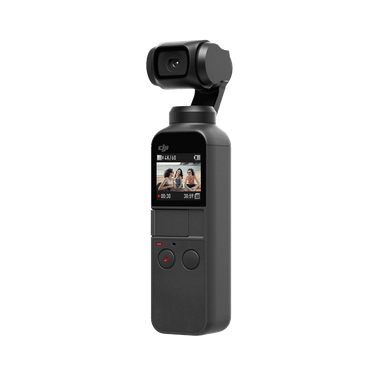
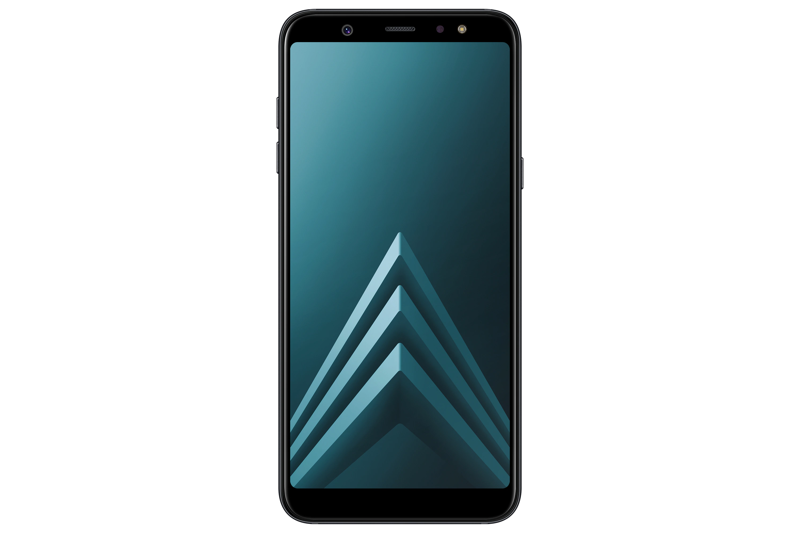
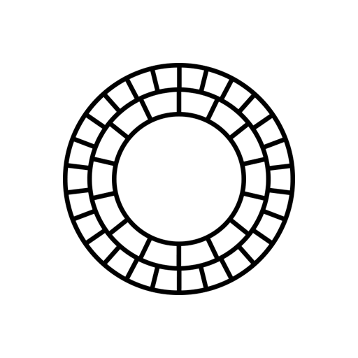
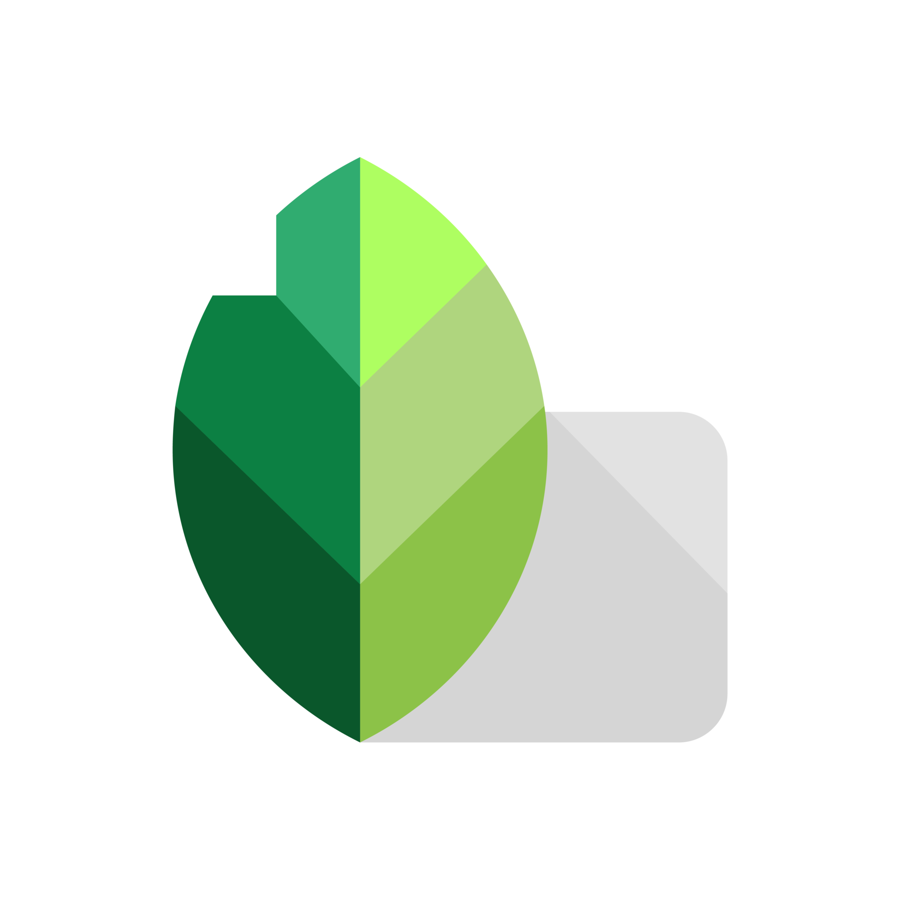

Este móvil destaca por su diseño elegante, pantalla Super AMOLED de 6,4 pulgadas con 90 Hz, y una batería de 5.000 mAh que permite hasta 30 horas de uso. Equipado con un procesador MediaTek Helio G80 y opciones de memoria de 4 GB/64 GB o 6 GB/128 GB, el dispositivo ofrece un rendimiento equilibrado. Su cámara cuádruple incluye una principal de 64 MP, ultra gran angular de 8 MP, cámara de profundidad de 2 MP y macro de 2 MP. Con un moderno diseño y colores variados, el Galaxy M32 cuenta con lector de huellas, puerto USB-C, conector de auriculares y NFC. Ejecuta Android 11 con One UI 3.0. Ofreciendo una buena relación calidad-precio, su precio promocional es de 279 euros, originalmente 329 euros.

Osmo Pocket
Esta cámara de bolsillo te permite grabar vídeos estabilizados y de alta calidad con solo sostenerla en la mano. Tiene un estabilizador de tres ejes, una cámara de 12 megapíxeles, una pantalla táctil de 1.08 pulgadas y una batería de 875 mAh. Puede grabar vídeos en 4K a 60 fps y fotos en formato JPEG o RAW. También tiene varios modos de grabación, como panorámica, timelapse y seguimiento facial. Se puede conectar a un smartphone mediante un adaptador USB-C o Lightning, y usar la aplicación DJI Mimo para ampliar las funciones y opciones de la cámara. Este dispositivo compacto e inteligente que se adapta a cualquier situación y te ayuda a capturar los momentos más importantes de tu vida.
Mavic Mini
Este dron ofrece una experiencia de vuelo excepcional y calidad de imagen con su cámara de 12 MP y capacidad para grabar videos en resolución Quad HD. Con un peso de solo 249 gramos, evita la necesidad de permisos en muchos países. Su estabilizador de tres ejes mejora la suavidad de las imágenes, mientras que la batería de 2400 mAh permite hasta 30 minutos de vuelo. Incluye un control remoto con conexión de vídeo de alta definición a 2 km de distancia y se maneja fácilmente con la aplicación DJI Fly, que también ofrece un tutorial de vuelo. Ideal para principiantes, aficionados y viajeros que deseen capturar momentos únicos desde el aire.

Galaxy A6+
La destacada área fotográfica del Galaxy A6+ incluye una cámara dual trasera con un sensor principal de 16 MP (apertura f/1.7) para imágenes de calidad, y un sensor secundario de 5 MP (apertura f/1.9) que mide la profundidad para efectos bokeh en retratos. La cámara frontal de 24 MP (apertura f/1.9) cuenta con un flash LED para selfies mejoradas en entornos oscuros. Ambas cámaras ofrecen modos de disparo como panorámica, timelapse, HDR y seguimiento facial. El dispositivo puede grabar vídeos en Full HD a 30 fps con estabilización y sonido claro, proporcionando una experiencia fotográfica completa.
Aplicaciones

VSCO
VSCO es una aplicación de edición de fotos y vídeos que ofrece más de 200 preajustes de alta calidad y herramientas profesionales. Permite ajustar color, contraste, grano, y otros parámetros, así como crear collages, panorámicas, timelapses y efectos especiales. La aplicación fomenta la participación en la comunidad, donde se pueden compartir creaciones, inspirarse en otros creadores y participar en desafíos fotográficos semanales. Ideal para amantes de la fotografía y el vídeo que buscan expresar su estilo y personalidad.

Snapseed
Esta aplicación permite editar imágenes con movimientos de deslizamiento para seleccionar diferentes efectos y mejoras. Los usuarios pueden optar por un ajuste «automático» de color y contraste, filtros como el desenfoque de lente, brillo de glamour, scape HDR y noir. Snapseed puede guardar el historial de edición de los usuarios y redirigir a cualquiera de las acciones anteriores. También puede crear y guardar combinaciones de filtros utilizando los filtros predeterminados y las funciones de edición. La lista de efectos especiales y filtros incluye Drama, Grunge, Vintage, Enfoque central, Marcos y un Cambio de inclinación.